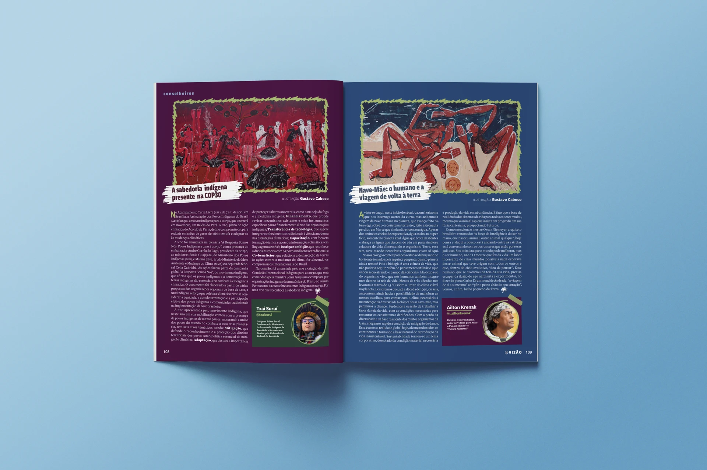
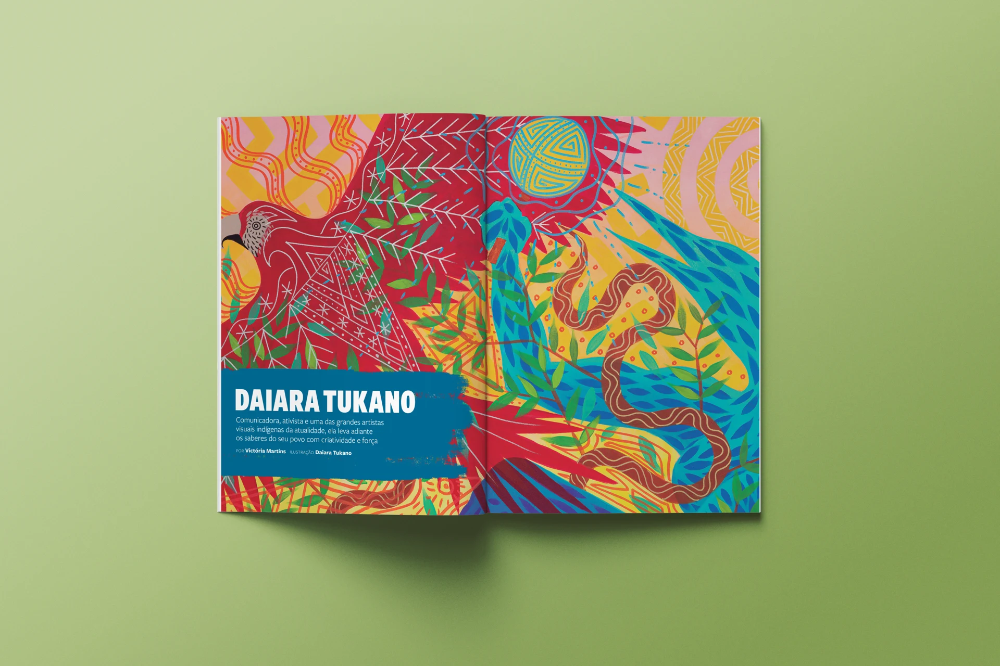
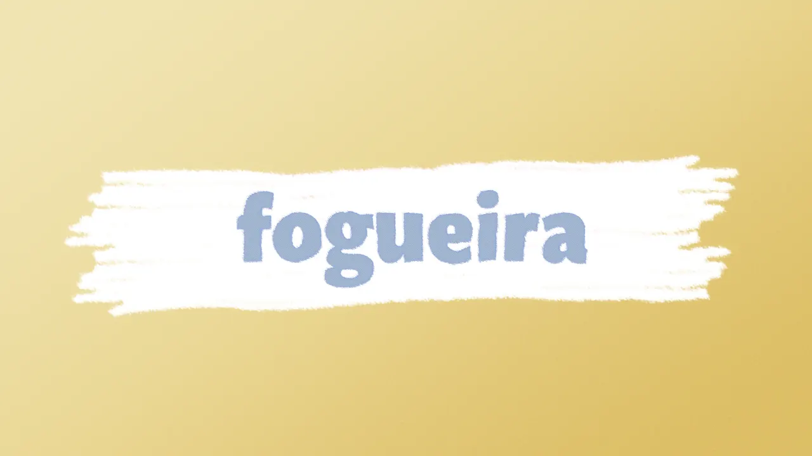
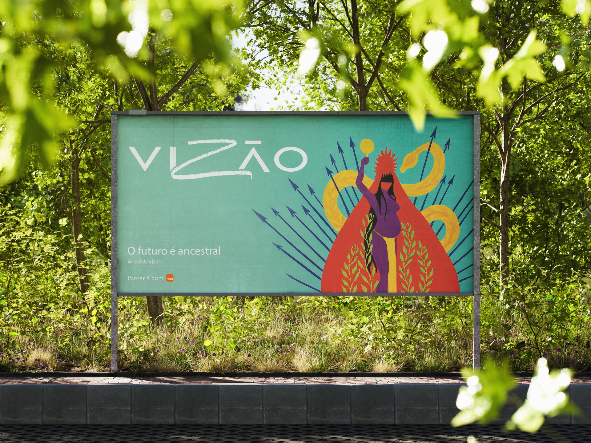
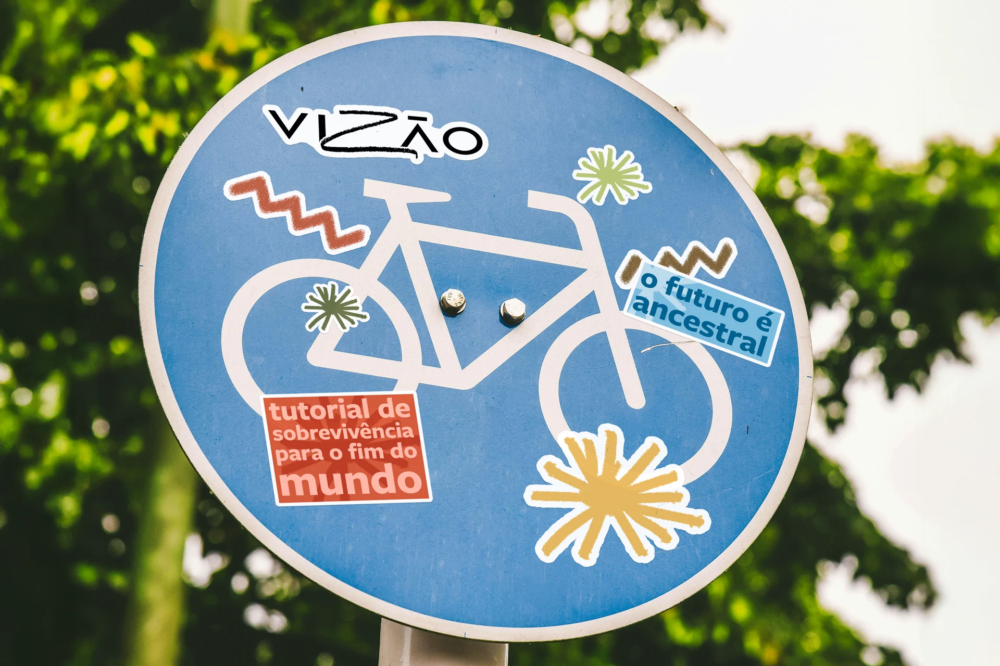
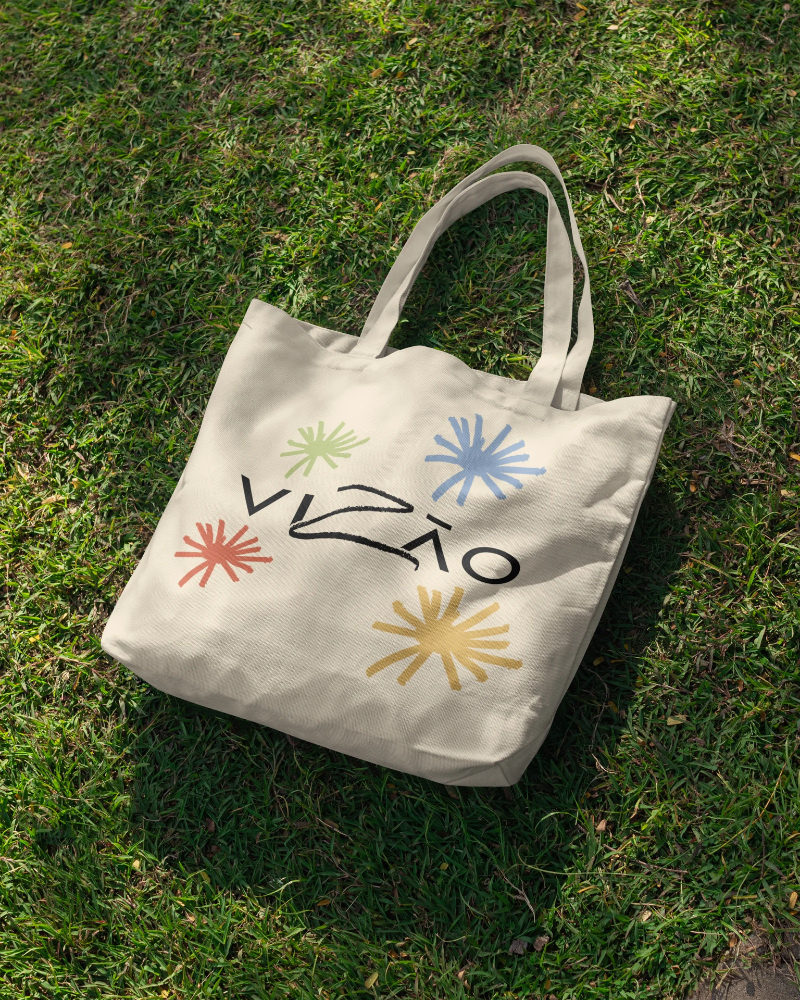
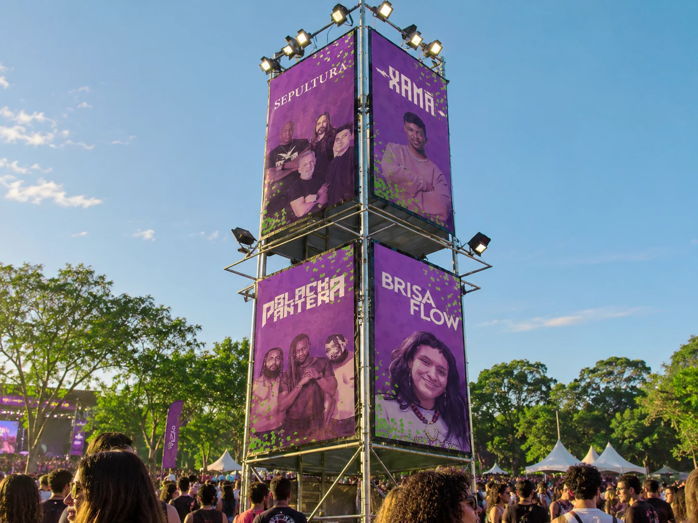

VIZÃO
A VIZÃO é um projeto editorial acadêmico desenvolvido a partir do tema “Saúde”, com foco específico na ansiedade climática. A proposta da revista parte da ideia de um tutorial de sobrevivência para o fim do mundo, construindo um guia espiritual, cultural e de resgate ancestral para jovens que enfrentam as incertezas de um futuro marcado pela crise climática.
O projeto é fundamentado no conceito de “Futuro Ancestral”, de Ailton Krenak, e na filosofia Ubuntu, aproximando diferentes temporalidades e perspectivas para questionar a ideia de um futuro linear. A revista busca romper fronteiras coloniais e dar protagonismo aos povos originários de toda a América, valorizando conhecimentos, narrativas e tradições que foram historicamente apagados ou silenciados.
Visualmente, a identidade da VIZÃO busca reforçar essa conexão com a ancestralidade por meio de uma linguagem manual, orgânica e artesanal. A publicação utiliza diversos desenhos feitos à mão, ilustrações e elementos gráficos que remetem ao fazer artesanal, inspirados em referências das artes indígenas brasileiras. Essa escolha aproxima o projeto de uma estética menos digital e rígida, trazendo textura, imperfeição e um caráter mais humano para a publicação.
A estrutura editorial da VIZÃO se organiza em três eixos: passado, presente e futuro. Mais do que uma sequência temporal, eles funcionam como diferentes caminhos de reflexão: o passado recupera saberes ancestrais e tradições; o presente mergulha nas questões e lutas que ganham voz no agora; e o futuro propõe caminhos, provocações e possibilidades para imaginar novas formas de existência.
Mais do que informar sobre a crise climática, a VIZÃO busca reconectar o leitor à vida, à natureza e à ancestralidade. A linguagem visual e editorial trabalha justamente essa ideia: olhar para os saberes que vieram antes para questionar o presente e imaginar novos futuros. Uma publicação que transforma a ansiedade diante do futuro em um convite à reflexão, à conexão e à construção de outras possibilidades.
Leia a VIZÃO
Ler a revista completa no Issuu









